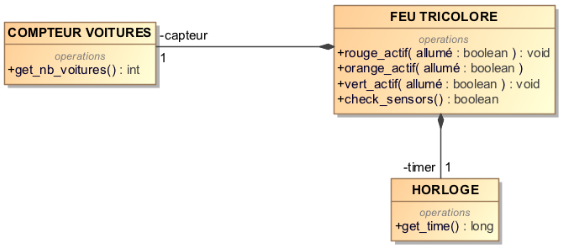
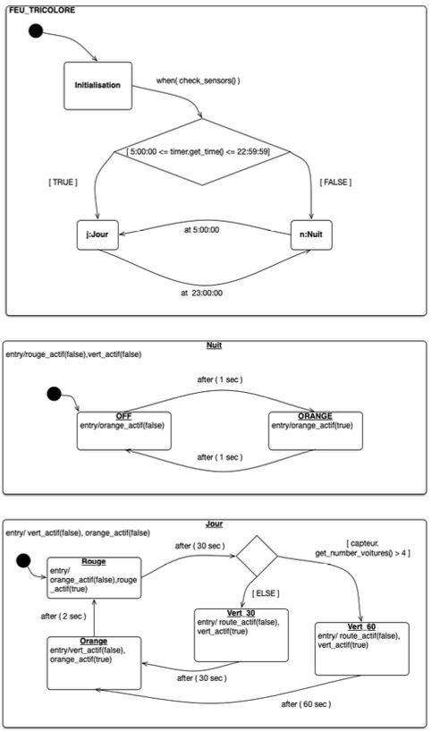
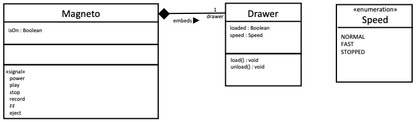
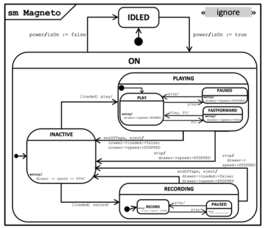

10 Practical Exercises: State Machine Diagrams
This chapter provides practical exercises to apply the concepts of UML State Machine Diagrams. Each exercise presents a problem description and a context (like a class diagram), followed by the task of modeling the dynamic behavior using a state machine.
10.0.1 Exercise 1: Traffic Light System
Problem: Model the behavior of a traffic light system located at the intersection of two major roads. The system controls three bulbs (red, orange, green), includes an internal clock, and a sensor to detect if at least 5 cars are waiting. The system operates in three modes: Initialization, Day Mode, and Night Mode.
- Initialization: Triggered on power-up. Checks sensors and bulbs. If okay, transitions to Day or Night mode based on the current time.
- Day Mode: Active from 05:00:00 to 22:59:59. Starts with Red for 30s. Red and Green lights normally last 30s each. However, if the sensor detects >= 5 cars just before switching to Green, the Green light lasts 60s instead. The transition from Green to Red includes a 2s Orange light.
- Night Mode: Active from 23:00:00 to 04:59:59. Triggered only when the Day mode is in the Red state at 23:00:00. The Orange light flashes (1s on, 1s off).
- Transitions between Day/Night: Switches to Night mode at 23:00:00 (if Red). Switches back to Day mode at 05:00:00.
Context: A simplified class diagram shows the FEU TRICOLORE (Traffic Light) interacting with COMPTEUR VOITURES (Car Counter) and HORLOGE (Clock).

Task:
- Model the traffic light’s behavior using a UML State Machine Diagram.
- Modify the diagram to handle synchronization with an identical traffic light on the intersecting road: when one light goes from Green to Orange, the other goes from Red to Green. Document any assumptions made.

Correction Details :
- Top-Level States: The machine starts in the
Initialisationstate. A transition with a guardcheck_sensors()leads to a choice point. Based on the time fromtimer.get_time(), it enters either theJour(Day) orNuit(Night) composite state. - Day Mode (
Jour): This is a composite state with substatesRouge,Vert30,Vert60, andOrange.- The initial state within
JourisRouge. Entry action:rouge_actif(true), turn off others. - Transition
Rouge-> Choice Point: Triggeredafter(30 sec). - Choice Point ->
Vert60: Guard[capteur.get_nb_voitures() > 4]. Entry action:vert_actif(true), turn off others. - Choice Point ->
Vert30: Guard[ELSE]. Entry action:vert_actif(true), turn off others. - Transition
Vert60->Orange: Triggeredafter(60 sec). Entry action:orange_actif(true), turn off others. - Transition
Vert30->Orange: Triggeredafter(30 sec). Entry action:orange_actif(true), turn off others. - Transition
Orange->Rouge: Triggeredafter(2 sec). Entry action:rouge_actif(true), turn off others.
- The initial state within
- Night Mode (
Nuit): This is a composite state modeling the flashing orange light.- It has two substates:
ORANGE(light on) andOFF(light off). - Entry action for
Nuit: turn off red and green. - Entry action for
ORANGE:orange_actif(true). - Entry action for
OFF:orange_actif(false). - Transitions between
ORANGEandOFFare triggeredafter(1 sec)each.
- It has two substates:
- Transitions Between Day/Night:
Jour->Nuit: Triggerat(23:00:00). This transition should ideally originate from theRougestate withinJouras specified.Nuit->Jour: Triggerat(05:00:00).
Key Concepts Illustrated:
- Composite States:
JourandNuitencapsulate specific modes of operation. - Substates: Modeling the different light phases (Red, Green, Orange) within
Jourand flashing withinNuit. - Transitions: Showing changes between states based on time or conditions.
- Triggers: Using
after()andat()for Time Events,when()for Change Events, and operation calls. - Guards: Using conditions like time ranges or car count (
> 4) to direct flow. - Entry Actions: Defining behavior executed upon entering a state (e.g., activating a light bulb).
- Choice Pseudostate: Modeling conditional paths based on sensor reading.
10.0.2 Exercise 2: VCR (Magnetoscope)
Problem: Model the behavior of a simplified VCR (Magnetoscope) using a State Machine Diagram. The VCR interacts with a Drawer (which holds the cassette) and has signals corresponding to button presses (power, play, stop, record, FF, eject).
- Power:
powertoggles the VCR betweenIDLED(standby,isOn=false) andON(isOn=true). - Loading: The
Drawerclass handlesload()/unload()operations, reflected by itsloaded: Booleanattribute. - ON State: When ON, the VCR starts in an
INACTIVEsubstate (cassette loaded, doing nothing).- From
INACTIVE,play(ifloaded) transitions toPLAYINGstate. - From
INACTIVE,record(ifloaded) transitions toRECORDINGstate. playorrecordwhen notloadedhave no effect.
- From
- PLAYING State: This is a composite state.
- Starts in
PLAYsubstate (normal speed). playtoggles betweenPLAYandPAUSED.FF(Fast Forward) fromPLAYgoes toFASTFORWARDstate (speedFAST).FForplayfromFASTFORWARDreturns toPLAY(speedNORMAL).
- Starts in
- RECORDING State: This is a composite state.
- Starts in
RECORDsubstate. playtoggles betweenRECORDandPAUSED.FFis not available/ignored inRECORDING.
- Starts in
- Stopping/Ejecting:
stopfromPLAYINGorRECORDINGtransitions back toINACTIVE(cassette remains loaded, speedSTOPPED).ejectfromPLAYINGorRECORDINGtransitions back toINACTIVE, unloads the cassette (loaded=false, speedSTOPPED).endOfTape(internal signal) duringPLAYINGorRECORDINGautomatically ejects the tape and returns toINACTIVE.
Context: A class diagram shows Magneto (VCR), Drawer, and an enumeration Speed. Magneto has an isOn attribute and lists signals like power, play, etc. Drawer has loaded and speed attributes and load()/unload() operations.

Task: 1. Complete the provided partial State Machine Diagram for the Magneto class. 2. Describe the changes needed (in the class diagram and state machine) to add a bkwd (Backward/Rewind) button allowing reverse playback at normal and fast speeds.

Correction Details (Part 1):
- Top-Level States:
IDLED(initial) andON. Transitions between them are triggered bypower, settingisOnaccordingly. - ON State (Composite): Contains
INACTIVE,PLAYING, andRECORDINGsubstates. The initial state withinONisINACTIVE. Entry action forINACTIVEsetsdrawer->speed := STOPPED. - Transitions from INACTIVE:
play [loaded] /leads toPLAYING’s initial state (PLAY).record [loaded] /leads toRECORDING’s initial state (RECORD).
- PLAYING State (Composite): Contains
PLAY,PAUSED, andFASTFORWARDsubstates.- Initial state is
PLAY. Entry action:drawer->speed := NORMAL. PLAY->PAUSED: Triggerplay /. Entry action:drawer->speed := STOPPED.PAUSED->PLAY: Triggerplay /. Entry action:drawer->speed := NORMAL.PLAY->FASTFORWARD: TriggerFF /. Entry action:drawer->speed := FAST.FASTFORWARD->PLAY: TriggerFF /orplay /. Entry action:drawer->speed := NORMAL.
- Initial state is
- RECORDING State (Composite): Contains
RECORDandPAUSEDsubstates.- Initial state is
RECORD. RECORD->PAUSED: Triggerplay /.PAUSED->RECORD: Triggerplay /.
- Initial state is
- Stop/Eject Transitions:
- From
PLAYING(any substate) ->INACTIVE: Triggerstop / drawer->speed := STOPPED. - From
RECORDING(any substate) ->INACTIVE: Triggerstop / drawer->speed := STOPPED. - From
PLAYING(any substate) ->INACTIVE: Triggereject / drawer->loaded := false; drawer->speed := STOPPED. - From
RECORDING(any substate) ->INACTIVE: Triggereject / drawer->loaded := false; drawer->speed := STOPPED.
- From
- End of Tape:
- From
PLAYING->INACTIVE: TriggerendOfTape / drawer->loaded := false; drawer->speed := STOPPED. - From
RECORDING->INACTIVE: TriggerendOfTape / drawer->loaded := false; drawer->speed := STOPPED.
- From
(Solution for Part 2 - Adding Rewind):
- Class Diagram Changes: Add
REWIND_NORMALandREWIND_FASTliterals to theSpeedenumeration. Add abkwdsignal to theMagnetoclass. - State Machine Changes: Add a
REWINDINGcomposite state parallel toPLAYINGandRECORDINGwithinON. Add transitions fromINACTIVEtoREWINDINGtriggered bybkwd [loaded]. InsideREWINDING, add substates likeREWIND(normal reverse) andFASTREWIND. Add transitions toggling between them triggered bybkwd. Addstopandejecttransitions exitingREWINDINGback toINACTIVE. Add anendOfTapetransition fromREWINDINGas well.
Key Concepts Illustrated:
- Nested Composite States: Modeling different modes of operation (
ON,PLAYING,RECORDING) with their own internal behaviors. - Event Handling: Transitions triggered by button presses (signals) like
play,record,stop,FF,eject,power. - Guards: Using conditions like
[loaded]to enable/disable transitions. - Entry Actions: Setting attributes (
isOn,drawer->speed,drawer->loaded) upon entering states or as effects of transitions. - Modeling Complex Lifecycles: Capturing the intricate behavior of the VCR through states and transitions.